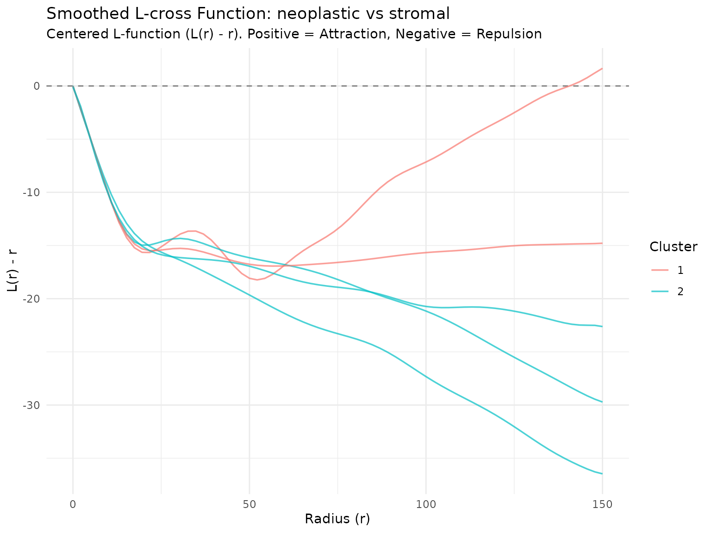
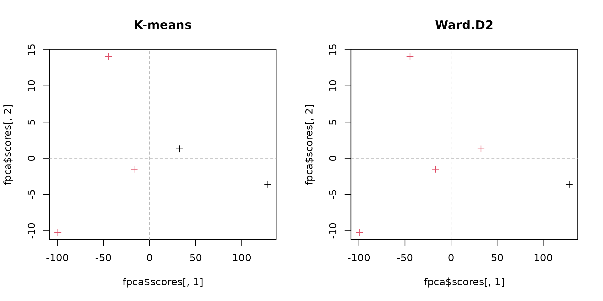

Data Loading
The input is a table with the column r_value and one
column per slide with its L-cross function (see the “Lcross pipeline”
vignette). On the HPC it is read from disk:
input_file <- "/projects/shared/TCGA_data/results/combined_Lcross.csv"
message("Reading data from: ", input_file)
dt <- fread(input_file)
message("Successfully loaded data with ", nrow(dt), " rows and ", ncol(dt), " columns.")Here we build it from the 5 example crops in tcga_crops,
so this vignette runs anywhere. With only 5 curves the analysis below is
a demonstration: the full analysis uses all the TCGA slides.
data(tcga_crops)
r_values <- seq(0, 150, length.out = 70)
set.seed(10)
subs <- downsample(tcga_crops, method = "uniform", n_target = 5000,
marks = c("neoplastic", "stromal"), by_marks = TRUE)
L_list <- lapply(subs, function(x) {
spatstat.explore::Lcross(x, i = "neoplastic", j = "stromal",
r = r_values, correction = "border")$border
})
dt <- data.table(r_value = r_values, as.data.table(L_list))
dim(dt)
#> [1] 70 6Functional Data Smoothing
We apply the fsmooth function to convert the raw data
points into a continuous functional data object.
Functional Principal Component Analysis (fPCA)
We perform Functional PCA on the smoothed -functions. The number of harmonics cannot exceed the number of curves: we use 3 with the 5 example curves (10 on the full TCGA data).
Unsupervised Clustering
We apply two clustering techniques to the scores of the first two principal components. On the full data we look for 6 groups; with the 5 example curves we use 2.
K-means & Hierarchical Clustering
# Set seed for reproducibility
set.seed(123)
# number of groups: 6 on the full data, fewer with the example curves
k <- min(6, nrow(fpca$scores) - 3)
# K-means clustering
fpca_km <- kmeans(fpca$scores[, 1:2], centers = k)
# Hierarchical clustering (Ward's method)
fpca_hc <- hclust(dist(fpca$scores[, 1:2]), method = "ward.D2")
memb_hc <- cutree(fpca_hc, k = k)Visualizations
Smoothed L-functions Plot
We visualize the smoothed -functions, color-coded by their K-means cluster assignments.
Function to plot the smoothed Lcross functions
plot_smoothed_Lfun(
smoothed_obj = smoothed_Lfun,
clusters_vec = fpca_km$cluster,
mark_i = "neoplastic",
mark_j = "stromal",
center_plot = TRUE # Subtracts 'r' since centered = FALSE in fsmooth
)
PC Scores Comparison
Finally, we project and compare the sample distributions in the reduced PCA space using both clustering results.
# Set up side-by-side plotting layout
par(mfrow = c(1, 2))
# K-means plot
plot(fpca$scores[, 1], fpca$scores[, 2], col = fpca_km$cluster, pch = 3, main = "K-means")
abline(v = 0, lty = "dashed", col = "grey")
abline(h = 0, lty = "dashed", col = "grey")
# Hierarchical clustering plot
plot(fpca$scores[, 1], fpca$scores[, 2], col = memb_hc, pch = 3, main = "Ward.D2")
abline(v = 0, lty = "dashed", col = "grey")
abline(h = 0, lty = "dashed", col = "grey")